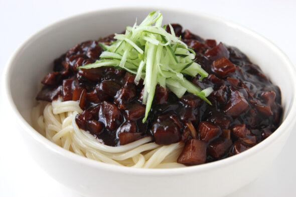

Jajangmyeon

Description
Jajangmyeon (자장면), also called jjajangmyeon (짜장면), is a noodle dish in a black bean sauce. Along with jjamppong (짬뽕, spicy seafood noodle soup) and tangsuyuk (탕수육, sweet and sour pork or beef), it’s a popular Korean-Chinese dish.
Ingredients
Sauce Recipe
- 5 tablespoons of Chunjang (춘장), Korean black bean paste
- 2 tablespoons cooking oil
- 1 tablespoon sugar
- 1 tablespoon oyster sauce - optional
- 1 cup chicken stock or water
- 1 tablespoon potato or corn starch
Meat
- 8 to 10 ounces pork (preferably with some visible fat, pork shoulder cut, Boston butt, etc.)
- 1 teaspoon grated ginger
- 1 tablespoon rice wine (or mirin)
- ⅛ teaspoon each salt and pepper
- 2 tablespoons cooking oil
- 1 tablespoon soy sauce
Vegetables
- 1 extra large onion (or 2 medium, 12 to 14 ounces)
- 8 ounces green cabbage
- 8 ounces zucchini
- 1 small cucumber for garnish - optional
Instruction
- Have a pot of water ready to cook the noodles. Turn the heat on when you start cooking the meat. This way you will have the boiling water ready, for cooking the noodles, by the time the sauce is done.
- Prepare the pork and vegetables by cutting them into 1/2 - 3/4 inch cubes. Marinate the pork with a tablespoon of rice wine (or mirin), ginger, salt and pepper while preparing the vegetables.
- Add the black bean paste to a small saucepan with the oil, sugar, and the optional oyster sauce. Fry it over medium heat for 2 - 3 minutes, stirring constantly.
- Heat a large pan with 2 tablespoons of cooking oil over medium high heat. Add the pork and stir fry until no longer pink, adding a tablespoon of soy sauce half way through.
- Add the onion and cook until soft, stirring occasionally.
- Add the cabbage and zucchini and continue to stir fry until vegetables are softened.
- Stir in the black bean paste and mix everything together until all the meat and vegetables are coated well with the paste.
- Mix everything together until all the meat and vegetables are coated well with the paste. If you like ganjjajang, you can stop here and skip the next two steps. See note.
- Pour in the stock (or water) and bring it to a boil. Cook for 3 to 4 minutes.
- Stir in the starch slurry and cook briefly until the sauce is thickened. Add more sugar to taste.
- Add the noodles in the boiling water. Cook according to the package instructions and drain. Do not overcook. The noodles should have a firm bite to them (al dente). Place a serving size of noodles in each bowl. Spoon the sauce over the noodles and garnish with the optional cucumber matchsticks. Alternatively, you can serve over cooked rice.